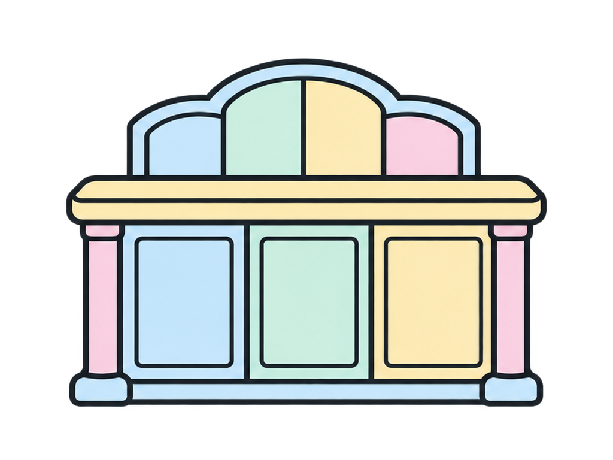

Less prompting. Same authority.
How does configuration change the user's instructions without changing authority?
PART 1
Build the operating rules
Builder sourcesBuilder sources
Proposed configurationProposed configuration
develop design
human acceptance required
Human review
Day-1 Readiness DeskPART 2
Test the configured Project
Prepared reference cfg_v002Prepared reference
cfg_v002
Employee caseEmployee case
Request cardRequest card
test prepared reference
prepare review materials
Slide example: Maya
Live walkthrough: Lena Ortiz
Functional agent: An assistant configured for one business workflow.
Part 2 uses a prepared reference configuration.
Conceptual comparison. Prepared v002 reference, not observed live output.